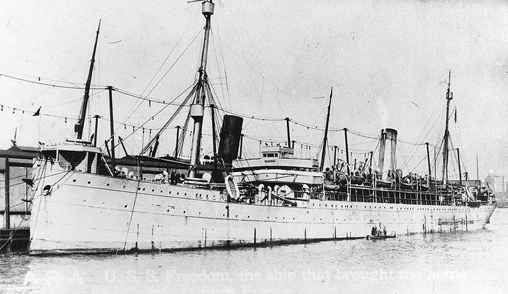

Parafia Mszana Dolna · 1892–1916 · nowa historia z ksiąg sąsiedniej parafii
Do Pesztu i do Chicago
W księgach sąsiedniej parafii Mszana Dolna z lat 1890–1916 blisko siedemdziesiąt wpisów prowadzi daleko od domu. Najpierw do Budapesztu, potem do Chicago.
Ta historia wychodzi poza parafię Dobra, do sąsiadów. Na zachód od niej leżała parafia Mszana Dolna. W jej księgach swoje działy mają Mszana Dolna, Mszana Górna, Kasinka Mała, Łętowe, Słomka, Glisne i ta część Łostówki, która nie należała do Dobrej. Z lat 1890–1916 zachowały się roczne odpisy tych ksiąg, czyli kopie, które proboszcz sporządzał po każdym roku. W listopadzie 2026 roku zostały odczytane w całości: prawie 15 tysięcy chrztów, ślubów i pogrzebów.
Odczytano je przy okazji poszukiwań rodziny mojego ojca. W tych księgach są Węglarzowie z Mszany Górnej, rodzina mojej prababki. W rodzinie ojca powtarzano też dwie opowieści: że przodkowie przyszli kiedyś z Węgier i że były ciotki za oceanem. W księgach Mszany Węgry i Ameryka wracają co kilka stron. Blisko siedemdziesiąt wpisów prowadzi daleko od domu: około pięćdziesięciu na Węgry, dwanaście do Ameryki, kilka do Ostrawy, na Śląsk i do Prus.
Zmarł w Budapeszcie
Między 1892 a 1911 rokiem do ksiąg zmarłych wpisano dziewiętnastu mężczyzn z parafii, którzy zmarli na Węgrzech, z tego szesnastu w Budapeszcie. Proboszcz ich nie chował. Dopisywał ich, kiedy z Węgier przyszło świadectwo zgonu, a starostwo w Limanowej kazało je odnotować. Takie wpisy nie mają zwykle numeru ani podpisu księdza, a w rubryce uwag stoi numer urzędowego pisma.
Pierwszy był Jan Łabuz, młynarz z Mszany Dolnej. Miał 33 lata i żonę. Utonął w Budapeszcie 30 września 1892 roku. Józef Bolisęga z Kasinki Małej, żonaty robotnik, spadł z wysokości w maju 1894 roku. Miał 28 lat. Pismo z Budapesztu nosi datę 27 stycznia 1895 roku, osiem miesięcy po jego śmierci.
Z księgi zmarłych Kasinki Małej, wpis bez numeru w odpisie z 1895 roku
Maji 1894 · 8 · Bolisęga Josephus uxoratus operarius · 28 · ex alto cecidit · Budapestini 27/1 1895 N° 330.
8 maja 1894 roku. Józef Bolisęga, żonaty, robotnik, 28 lat. Spadł z wysokości. [Pismo] z Budapesztu z 27 stycznia 1895 roku, nr 330.
Mszana Dolna, odpisy ksiąg zmarłych 1890–1912 · sygn. 2582/5500, rok 1895 · skan 003 · zobacz skan ↗
Franciszek Krawczyk z Łostówki, najemnik, został w Budapeszcie zabity w maju 1895 roku. Miał 39 lat. Andrzej Kraska z Kasinki Małej utonął w marcu 1899 roku; przyczynę ksiądz zapisał po polsku: „utonął”. Walenty Szczypka z Mszany Dolnej zmarł na suchoty w sierpniu 1898 roku w szpitalu św. Stefana i tam go pochowano. W tym samym szpitalu zmarł w 1907 roku Antoni Kołodziejski z Kasinki Małej, a w szpitalu św. Rocha w 1906 roku Józef Mucha, też z Kasinki.
Najmłodszy z dziewiętnastu miał 17 lat, większość od dwudziestu kilku do czterdziestu. Dziesięciu pochodziło z Kasinki Małej.
Wśród nich jest Maciej Węglarz z Mszany Górnej, syn Józefa i Katarzyny. Zmarł 22 grudnia 1894 roku, mając 27 lat. Świadectwo zgonu wystawiono w Budapeszcie w lutym 1895 roku. Nosił nazwisko mojej prababki. Czy był jej krewnym, nie wiem.
Kőbánya, czyli kamieniołom
Co tam robili? Księża zapisywali krótko: robotnik, najemnik, raz młynarz. Więcej wiadomo z gazet i z prac historyków. Pod koniec lat 70. XIX wieku szybko rosnący Budapeszt zaczął ściągać biedotę z Galicji. Polacy pracowali w cegielniach, młynach, garbarniach i cementowniach, na budowach i przy regulacji Dunaju. „Jeden emigrant pociąga za sobą kilkunastu swojaków”, pisał w 1898 roku „Kurjer Lwowski”. Najwięcej Polaków osiadło w dziesiątej dzielnicy miasta, Kőbányi. Jej nazwa znaczy po prostu „kamieniołom”.
Od 1897 roku w Kőbányi odprawiano dla polskich robotników msze. W 1908 roku przyjechał do nich stały duszpasterz, ksiądz Wincenty Danek z archidiecezji lwowskiej. Dwa lata później prosił o pomoc rodaków w Ameryce. W „Dzienniku Chicagoskim” pisał, że w Budapeszcie przebywa około 15 tysięcy Polaków, „przeważnie sami to robotnicy, co z pracy rąk żyją”.
Wpisy z Mszany zgadzają się z tym obrazem: młynarz, robotnik, który spadł z wysokości, dwóch mężczyzn, którzy utonęli. Do Budapesztu było zresztą z Mszany bliżej, niż się wydaje. Od grudnia 1884 roku szła tędy kolej (historia „Kolej i parowa piła”), a w Nowym Sączu łączyła się z linią, która przez Muszynę prowadziła na Węgry.

Cholera w Kőrösmező
Jakub Krawczyk z Łostówki zmarł daleko od Budapesztu. Miał 28 lat. Umarł na cholerę 8 sierpnia 1893 roku w Kőrösmező. To dzisiejsza Jasinia na ukraińskim Zakarpaciu, wtedy węgierska wieś tuż przy granicy Galicji.
W latach 1893–1894 budowano tam kolej w głąb Karpat. Robotników zebranych z wielu stron trzymano we wspólnych barakach i w 1893 roku wybuchła wśród nich cholera. Zmarło 230 budowniczych tej linii. Okoliczne wsie nie pozwalały chować ich na swoich cmentarzach, więc kolej kupowała ziemię na osobne. Tych, którzy wracali do domów, badał lekarz, a wieziono ich osobnym wagonem. Wagony jadące do Budapesztu odczepiano w Kőbányi.
Księga nie mówi, że Jakub pracował przy tej budowie. Zgadzają się jednak miejsce, rok i choroba. Wiadomość o jego śmierci doszła do Mszany dopiero w kwietniu 1895 roku, po dwudziestu miesiącach.
Urodzeni w Budapeszcie
Na Węgry nie jeździli sami mężczyźni. W księgach zmarłych z lat 1894–1912 jest dwadzieścioro jeden dzieci i młodych ludzi, przy których ksiądz dopisał: urodzony w Budapeszcie. Rodzice wrócili z nimi na wieś i tu ich pochowali.
Angela Niedośpiał zmarła w Mszanie Dolnej w kwietniu 1901 roku. Miała trzy tygodnie, a urodziła się w Budapeszcie, więc matka ruszyła w drogę z noworodkiem. Jan Kęskowicz, dziewięciolatek urodzony w Budapeszcie, utopił się w tym samym miesiącu w Mszanie Górnej.
Jan Karpierz z Kasinki Małej zmarł 29 września 1902 roku, mając sześć lat. Ksiądz zapisał dokładnie, skąd chłopiec pochodził.
Z księgi zmarłych Kasinki Małej, 1902
Joannes Karpierz filius Casimiri et Annae Wróbel natus in Budapest die 24 maji 1896 et ibidem baptizatus et inscriptus in Köbanya
Jan Karpierz, syn Kazimierza i Anny z Wróblów, urodzony w Budapeszcie 24 maja 1896 roku, tam ochrzczony i wpisany do ksiąg w Kőbányi.
Mszana Dolna, odpisy ksiąg zmarłych 1890–1912 · sygn. 2582/5500, rok 1902 · skan 005 · zobacz skan ↗
Chłopca zabrał „sipek”, czyli błonica (historia „Sipka”). Jedenaście dni później na tę samą chorobę zmarł jego brat Józef, który miał dwa i pół roku.
Budapeszt widać też w księgach ślubów. Pięć panien młodych z lat 1902–1913 urodziło się w Budapeszcie. Katarzyna Knapczyk z Łostówki miała w lutym 1902 roku 21 lat, przyszła więc na świat około 1881 roku. Jej rodzice byli zatem w Budapeszcie już na początku lat 80., zaraz po tym, jak ruszyła tam fala z Galicji. Anna Mucha z Kasinki Małej urodziła się w Budapeszcie w marcu 1891 roku. Za mąż wyszła w lutym 1907 roku, nie mając jeszcze szesnastu lat; zgodę dał sąd w Mszanie Dolnej.
Sześcioro z dwadzieściorga jednego urodzonych w Budapeszcie ksiądz zapisał jako dzieci nieślubne. To prawie co trzecie. Wśród wszystkich dzieci ochrzczonych w parafii nieślubne było mniej więcej co szesnaste. Ksiądz Danek donosił z Budapesztu, że wielu rodaków żyje tam bez ślubu, i sam takie pary żenił.
Na Węgrzech ślub brało się zresztą inaczej niż w Galicji. Od 1 października 1895 roku ważne było tam tylko małżeństwo zawarte przed urzędnikiem. Latem 1896 roku pobrały się tak w Budapeszcie dwie pary z parafii. 27 lipca Cecylia Łacna z Kasinki Małej wyszła za Andrzeja Białoboka, urodzonego w Siarach. 23 sierpnia Stefan Dziedzina z Łostówki ożenił się z Franciszką Kotarbą. Proboszcz przepisał oba śluby do księgi w Mszanie. Nie ma przy nich świadków ani księdza, jest za to zdanie po niemiecku.
Z księgi ślubów Łostówki, dopisek przy ślubie z 23 sierpnia 1896 roku
In Budapest durch den Standesbeamten getraut
Zaślubieni w Budapeszcie przez urzędnika stanu cywilnego.
Mszana Dolna, odpisy ksiąg ślubów 1890–1916 · sygn. 2582/4500, rok 1897 · skan 006 · zobacz skan ↗
„Zabřech (Hungaria)”
Słowo „Hungaria” pada w księgach Mszany tak często, że raz ksiądz wpisał je z rozpędu. W sierpniu 1902 roku w Mszanie Dolnej żenił się Stanisław Pach, urodzony w Dębnie robotnik z Witkowic. Wziął dwudziestoletnią Wiktorię Strzelec spod numeru 234. Witkowice to wielka huta pod Ostrawą, na Morawach.
Pierwszy syn Pachów, Władysław, zmarł w grudniu 1903 roku „in Zabrechu u Svinova”, mając pół roku. Drugi, Bolesław, urodził się w październiku 1906 roku w Mszanie, w domu matki, i zmarł trzy i pół miesiąca później.
Z księgi chrztów Mszany Dolnej, dopisek przy chrzcie z 4 listopada 1906 roku
Boleslaus · + 8/2 907 in Zabřech (Hungaria)
Bolesław. Zmarł 8 lutego 1907 roku w Zábřehu (Węgry).
Mszana Dolna, odpisy ksiąg chrztów 1901–1911 · sygn. 2582/3505, rok 1906 · skan 006 · zobacz skan ↗
Zábřeh nie leży jednak na Węgrzech. To wieś tuż obok witkowickiej huty, dziś dzielnica Ostrawy.
Do Ostrawy i na Śląsk prowadzi w Mszanie tylko kilka wpisów. Sebastian Grzesiak z Kasinki Małej, górnik, zmarł na tyfus w marcu 1893 roku w Orłowej koło Karwiny, mając 26 lat. W parafii Dobra było odwrotnie: tam najwięcej dopisków prowadziło właśnie do Ostrawy (historia „Do Ostrawy i za ocean”).
Do Chicago
Pierwszy ślad Ameryki stoi w tym samym wpisie co Budapeszt. W lipcu 1894 roku w Mszanie Dolnej zmarła dwuipółletnia Marianna Cieślak.
Z księgi zmarłych Mszany Dolnej, 23 lipca 1894
Marianna f. Jacobi Cieślak degentis in America et Magdalenae Luberda nata in Budapest
Marianna, córka Jakuba Cieślaka, przebywającego w Ameryce, i Magdaleny z Luberdów, urodzona w Budapeszcie.
Mszana Dolna, odpisy ksiąg zmarłych 1890–1912 · sygn. 2582/5500, rok 1894 · skan 002 · zobacz skan ↗
Dziewczynka urodziła się w Budapeszcie, ojciec pojechał dalej, za ocean, a matka wróciła z dzieckiem do Mszany.
Potem przez kilkanaście lat Ameryki w księgach nie ma. Wraca w 1907 roku i odtąd pojawia się coraz częściej.
| Lata | Węgry | Ameryka |
|---|---|---|
| 1890–1894 | 8 | 1 |
| 1895–1899 | 11 | 0 |
| 1900–1904 | 15 | 0 |
| 1905–1909 | 7 | 3 |
| 1910–1916 | 8 | 8 |
W tabeli są wpisy z ksiąg parafii Mszana Dolna według roku wpisu. Dla Węgier: zgony na Węgrzech, osoby urodzone w Budapeszcie i śluby tam zawarte. Dla Ameryki: chrzty, śluby i zgony za oceanem. Chrzty odczytano do 1911 roku, zgony do 1912, śluby do 1916, a od 1910 roku w odpisach brakuje Kasinki Małej. Ostatni wiersz jest więc zaniżony.
Najczęściej powtarza się Chicago, a w nim polska parafia św. Kazimierza. Przy chłopcu ze Słomki, ochrzczonym w 1907 roku jako nieślubny, ktoś dopisał później innym atramentem ojca i słowa „copul. Chicago par. S. Casimiri 10.X.1909”. Rodzice pobrali się więc w Chicago i dziecko stało się ślubne. U św. Kazimierza wzięli też ślub Józef Gajda z Łętowego i jego żona Franciszka. Wrócili, a w grudniu 1911 roku ochrzcili w Mszanie córkę Wiktorię.
Dwoje dzieci wpisano do księgi w Mszanie, choć urodziły się i zostały ochrzczone w Chicago. Jedno z nich po polsku.
Z księgi chrztów Łętowego, 1911
Stanisław Flig urodził się 22 sierpnia 1911 r. syn Marcina i Marii Franczak ochrzczony 27/8 w Kościele św. Kazimierza w Chicago
Mszana Dolna, odpisy ksiąg chrztów 1901–1911 · sygn. 2582/3505, rok 1911 · skan 014 · zobacz skan ↗
Na sąsiedniej stronie stoi Franciszek, syn Józefa Potaczka z Mszany Górnej, urodzony 14 września 1911 roku, „natus et Baptisatus in Chicago in America”. Chłopiec z Łostówki, urodzony w sierpniu 1907 roku, został ochrzczony w chicagowskim kościele Niepokalanego Poczęcia NMP; kartkę z wypisem ktoś włożył później między strony księgi. Annę, córkę Macieja Pustelnika z Mszany Dolnej, ochrzczono w lutym 1910 roku w jeszcze innym kościele w Chicago.
Parafię św. Kazimierza założono w 1890 roku. Około 1910 roku należało do niej ponad dwa tysiące rodzin. Parafia Niepokalanego Poczęcia NMP, założona w 1882 roku, była pierwszą polską parafią w South Chicago, dzielnicy hut.
Z Ameryki, tak jak z Węgier, wracano z małymi dziećmi. Franciszek Dziedzina, syn Józefa i Franciszki z Jamrozów, urodził się w Kanadzie. Zmarł na zapalenie płuc w Mszanie Dolnej w czerwcu 1909 roku, mając dziesięć miesięcy. Angela Polak z Mszany Górnej, „urodzona w Ameryce i tam ochrzczona”, zmarła w kwietniu 1912 roku. Miała pół roku.
Nie wszyscy wrócili. W listopadzie 1910 roku zmarł w Ameryce 44-letni gospodarz z Mszany Dolnej. Regina Kapałka wyszła powtórnie za mąż w lutym 1913 roku. Żeby mogła to zrobić, konsystorz biskupi w Tarnowie musiał orzec, że śmierć jej męża Franciszka „przez metrykę śmierci wystawioną w Ameryce dostatecznie stwierdzoną została”. W październiku 1916 roku, w środku wojny, wychodziła za mąż Wiktoria Potaczek z Mszany Górnej. Ksiądz zanotował: „Metryka śmierci Klemensa Potaczek zmarłego w Uniontown a potwierdzona przez Expozyturę c. k. Konsulatu w Pittsburg znajduje się w aktach”. Uniontown to miasto w zagłębiu węgla i koksu w Pensylwanii.
Jak się jechało
Księgi parafialne nie mówią nic o samej podróży. Mówią o niej amerykańskie papiery. Mam dwa takie dokumenty dziewczyny z sąsiedniej parafii Niedźwiedź. Zofia Halama z Koniny miała 18 lat, kiedy 17 września 1913 roku zeszła na ląd w Filadelfii. Konina to wieś mojej babki, a Halamowie to jej ród. Czy Zofia była jej krewną, nie wiem.
Urzędnik imigracyjny zapisał to, czego nie ma w żadnej metryce. Zofia była służącą i panną, umiała czytać i pisać. Miała pięć stóp i cal wzrostu, czyli 155 centymetrów, jasną cerę, włosy blond i niebieskie oczy. Bilet opłaciła sama i miała przy sobie 25 dolarów. W Koninie został jej ojciec, Jakub. Jechała do siostry Karoliny, która mieszkała już w Filadelfii przy North Front Street 1100. Tuż pod nią na liście pasażerów stoi Anna Hanula, też osiemnastoletnia i też z Koniny.
Na tej samej stronie listy zapisano Czechów i Morawian, Niemca z Węgier, polską rodzinę z trzyletnią córką i grupę Żydów z Rosji. W roku, który skończył się 30 czerwca 1913, urzędnicy imigracyjni zapisali jako Polaków ponad 185 tysięcy przybyszów.
Zofia i Anna płynęły z Bremy parowcem „Wittekind”. Zbudowano go w 1894 roku w Hamburgu dla linii Norddeutscher Lloyd, od początku do wożenia emigrantów i towarów. Po przebudowie w 1900 roku zabierał 177 pasażerów drugiej klasy i ponad tysiąc na międzypokładzie, czyli w najtańszej klasie. Płynął z prędkością 12 węzłów, to jest 22 kilometrów na godzinę, więc droga przez Atlantyk trwała blisko dwa tygodnie.

Niecały rok po podróży Zofii wybuchła wojna. „Wittekind” schronił się w Bostonie i został tam internowany. W 1917 roku przejęli go Amerykanie. Jako „Freedom” woził w 1919 roku żołnierzy wracających z Francji, a w 1924 roku poszedł na złom.
Na liście pasażerów przy nazwisku Zofii jest stempel z datą 23 października 1940 roku. Urzędnik sprawdzał wtedy, kiedy i czym przypłynęła. Zofia została więc w Ameryce.
A potem Francja
Przy siedmiorgu dzieci ochrzczonych w latach 1893–1907 urzędnicy stanu cywilnego dopisali po wielu latach, że zmarły we Francji. To już następna fala wyjazdów, po pierwszej wojnie, i inna historia.
A rodzinna opowieść o węgierskich korzeniach? Mogła się wziąć właśnie stąd. Nie trzeba było pochodzić z Węgier, żeby mieć w rodzinie kogoś, kto urodził się w Budapeszcie, wziął tam ślub albo został tam na zawsze.
Na ile to pewne
- PewneWszystkie wpisy przytoczone z imienia i nazwiska, z datami, miejscami i przyczynami śmierci. Każdy porównałem ze skanem. Dane Zofii Halamy pochodzą z karty przyjazdu i z listy pasażerów.
- PrawdopodobneLiczby wpisów: policzone z odczytów wszystkich odpisów, stan na listopad 2026. Że Jakub Krawczyk pracował przy budowie kolei w Kőrösmező. Że ojciec Marianny Cieślak pojechał do Ameryki z Budapesztu. Że podróż „Wittekindem” trwała blisko dwa tygodnie i że stempel z 1940 roku wiąże się z wnioskiem Zofii o obywatelstwo.
- MożliweŻe utonięcia i upadek z wysokości były wypadkami przy pracy. Że rodzinna opowieść o przodkach z Węgier bierze się z wyjazdów za pracą. Porównanie dzieci nieślubnych opiera się na małych liczbach.
- Do sprawdzeniaNazwa kościoła w Chicago przy chrzcie z 1910 roku. Nazwy miejscowości w czterech wpisach o zgonach na Węgrzech i w Ameryce, które znamy tylko z niestarannych odpisów sporządzonych w 1937 roku.
Czego nie wiemy
- Ilu ludzi wyjeżdżało naprawdę. Księgi notują tylko tych, którzy na obczyźnie zmarli, wzięli ślub albo ochrzcili dziecko.
- Dlaczego z Mszany jeżdżono głównie do Budapesztu, a z sąsiedniej Dobrej do Ostrawy. I dlaczego tak wielu wyjechało z Kasinki Małej.
- Czy Jakub i Franciszek Krawczykowie z Łostówki byli braćmi.
- Czy Maciej Węglarz był krewnym mojej prababki, a Zofia Halama krewną mojej babki. Ksiąg parafii Niedźwiedź z tych lat nie ma w internecie.
Źródła
- Odpisy ksiąg parafii Mszana Dolna w serwisie Metryki PTG, zespół 2582: chrzty 1890–1900 (sygn. 3500) i 1901–1911 (sygn. 3505), śluby 1890–1916 (sygn. 4500), zgony 1890–1912 (sygn. 5500). Każdy rok ma w serwisie osobny katalog. Przytoczone wpisy: zgony z roku 1893 (skan 004), 1894 (002, 003), 1895 (003, 005, 006), 1898 (002), 1899 (005), 1901 (002, 006), 1902 (005), 1903 (003), 1906 (004), 1907 (003), 1909 (002), 1910 (003), 1912 (004); śluby z roku 1897 (004, 006), 1902 (002, 006), 1907 (003), 1913 (001), 1916 (005); chrzty z roku 1906 (006), 1910 (002), 1911 (014, 016). Skanów przy dzieciach nieślubnych nie podaję.
- Karta przyjazdu i lista pasażerów parowca „Wittekind”, Filadelfia, 17 września 1913 roku. Archiwa Narodowe Stanów Zjednoczonych; kopie w serwisie FamilySearch: karta i lista pasażerów (po zalogowaniu).
- Józef Szymański, „Opieka duszpasterska nad Polakami na Węgrzech do 1939 roku”, „Studia Polonijne” t. 43, Lublin 2022: Polacy w Budapeszcie i w Kőbányi, ksiądz Danek, cytat z „Kurjera Lwowskiego” z 4 października 1898 roku.
- Zsuzsa Frisnyák, „A kolera térbeli terjedése és a közlekedés (1872–1914)”, „Közlekedés- és Technikatörténeti Szemle” 2018: cholera przy budowie kolei Máramarossziget–Kőrösmező.
- Wikipedia (węg.): „Polgári házasság a dualizmus korában”: śluby cywilne na Węgrzech od 1 października 1895 roku.
- Wikipedia (ang.): „USS Freedom (ID-3024)”: dzieje parowca „Wittekind”.
- Instytut POLONIKA, „Polskie parafie i kościoły w Chicago”: parafia św. Kazimierza. Wikipedia (ang.): „Church of the Immaculate Conception (Chicago)”.
- „Aliens admitted to the United States in the year ended June 30th, 1913”, Internet Modern History Sourcebook, Fordham University.